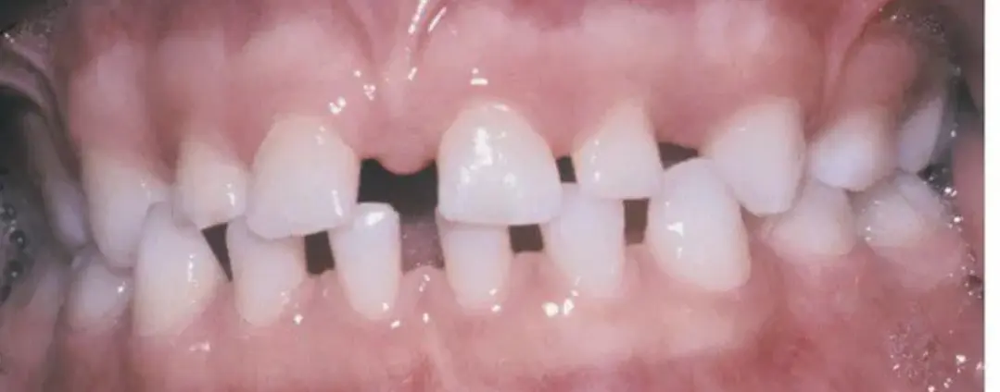
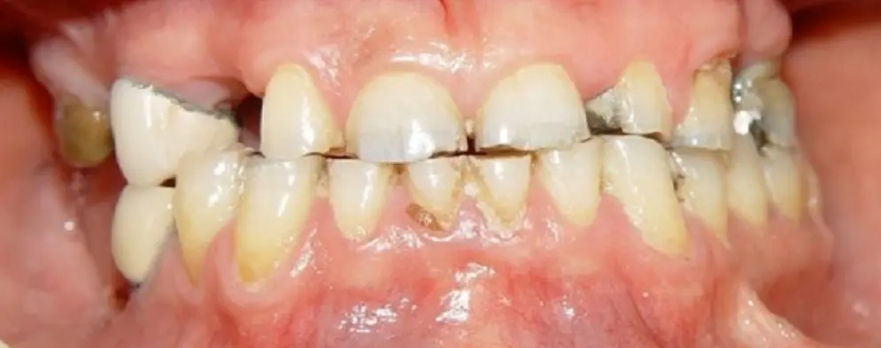
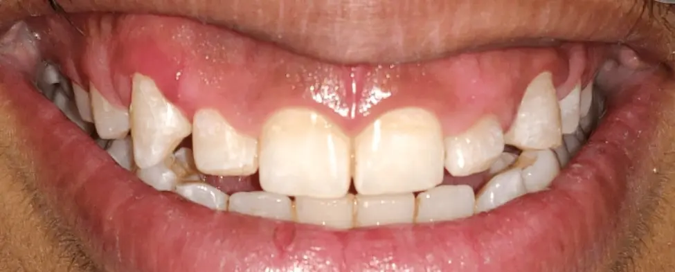

The Short Central Incisor: What Is the Cause and What Is the Treatment?
Suppose a patient presents whose central incisor has a crown length of 8 mm. The average crown length of a maxillary central incisor is about 10 to 11 mm, so this tooth counts as short, and before any treatment it must be established where that shortness came from.
A short central incisor crown can have three main causes: microdontia, loss of tooth length due to attrition, and altered passive eruption.
∆ Microdontia

If the tooth anatomy is complete and the CEJ can also be felt with a probe inside the sulcus, the gingiva is in its normal position and the tooth itself is small. In this case the problem is microdontia and its treatment is restorative. If needed, orthodontics is used before the restorative treatment to adjust the spaces.
∆ Attrition

If the incisal anatomy has changed, the tooth has lost its length from the incisal edge and the problem is attrition. Treatment in this case is also restorative, with protective appliances used alongside it.
∆ Altered Passive Eruption

Passive eruption is the process in which the gingiva gradually moves cervically until the gingival margin comes to rest about 1 to 2 mm from the CEJ. This process is complete by about age 15 or 16, and before that the gingiva sits on the enamel and covers part of the anatomic crown.
If the patient is past this age range but passive eruption has not completed, and the CEJ cannot be felt with an explorer inside the sulcus, the condition is called altered passive eruption. In this case the tooth is not actually short; part of its crown has simply remained under the gingiva. The treatment for this condition is esthetic crown lengthening.